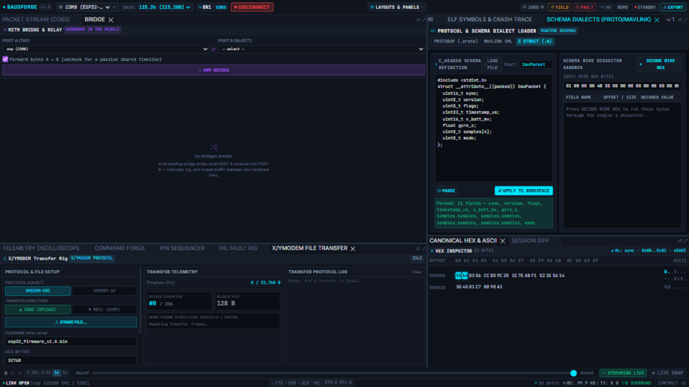

Schema Dialects
The Schema Dialects panel is the live decoder workbench: parse a schema, try it on captured wire bytes, and — without restarting anything — swap a port's dissector so the whole workbench re-dissects incoming frames with the new schema.

The three dialects
| Chip | Language | Use |
|---|---|---|
| C STRUCT (.h) | C header, struct __attribute__((packed)) |
The common case: your firmware already has the struct in a header — paste it. |
| PROTOBUF (.proto) | .proto text |
Compiled live; Root: names the message. |
| MAVLINK XML | MAVLink dialect XML | For MAVLink-speaking links. |
LOAD FILE vs paste
LOAD FILE opens any schema file from disk; the editor accepts paste just as well. The editor content is what PARSE/APPLY use — edits are yours until applied.
PARSE (dry run)
Press PARSE to compile the schema against the engine without touching any port. The result lists every decoded field (Parsed: 11 fields — sync, version, flags, timestamp_us, v_batt_mv, gyro_z, samples.samples[0..3], mode) or the exact compile error. Nothing on the wire is affected.
APPLY TO WORKSPACE (live swap)
Pressing APPLY TO WORKSPACE replaces the selected port's dissector mid-session:
- Frames from that port decode with the new schema from that instant — the stream summaries change immediately.
- The vault keeps raw bytes; re-reviewing always decodes with the current schema.
- A single-struct C header applies without naming a root struct; multi-struct headers need the root named (the error lists the declared structs).
- The engine rejects a header that does not fit the observed frame sizes with the precise reason (e.g.
field crc needs 28 bytes but the frame has 23) — padding/#pragma packis not honoured, so declarestruct __attribute__((packed))like your firmware does.
DECODE WIRE HEX (sandbox)
Paste raw hex bytes into the sandbox and DECODE WIRE HEX runs the parsed schema over exactly those bytes — a field-by-field table with offsets, sizes and values. This is how you validate a schema against a captured frame before applying it, or reverse-engineer a frame someone pasted you.
Workflow: correcting a mis-decode
- Spot a wrong field in the Dissector (e.g.
timestamp_uslooks like a frame counter). - Paste the header here, rename/retype the field, PARSE until the field list is right.
- DECODE WIRE HEX with a real frame's hex (copy it from the stream row) — confirm the values.
- APPLY TO WORKSPACE — the live stream re-dissects; the Activity Log records
schema_applywith the schema size. - Commit the corrected header to the repo — the workspace file references it for the next engine start.